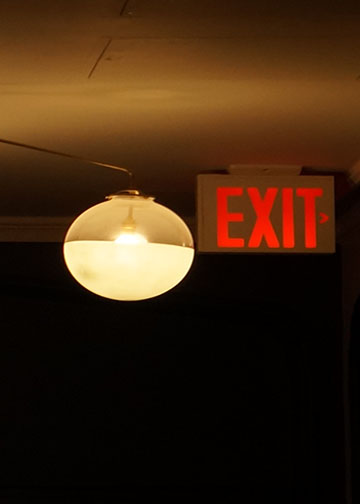

I chose this image because of the lighting and contrast between the exit sign and the warm ceiling light.Narrating two different paths, two different stories in a symbolic way. Either choose to deal with something harsh (such as the dark background) or exit abrubtly.